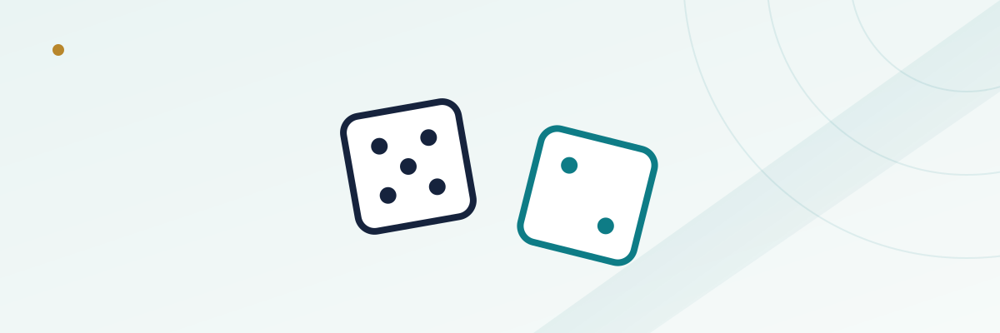

Craps Basics: Pass Line Bets, Odds Bets, and What to Avoid

Craps has a reputation as the loudest, most confusing table in the casino, and that reputation isn't entirely fair — the crowd noise comes from the fact that everyone at the table is rooting for the same shooter, not from the game being especially complicated. Strip away the felt full of bet types and craps really comes down to one core wager, one legal add-on to that wager, and a long list of side bets you can simply choose not to make. Learn those three things and you already understand more craps than most people who've played for years.
In this guide
The pass line bet: craps' foundation
The pass line is the bet almost everyone at a craps table has money on, and it's the one to understand first. You place a chip on the pass line before the shooter's first roll of a new round, called the come-out roll. From there, two things can happen right away: the shooter rolls a 7 or 11, and pass line bets win instantly; or the shooter rolls a 2, 3, or 12 — collectively called "craps" — and pass line bets lose instantly. Any other number (4, 5, 6, 8, 9, or 10) becomes "the point," and the hand moves into its second phase.
The house edge on a pass line bet is about 1.41%, which puts it among the better bets in the entire casino, sports betting included. It's simple, it's social, and it's the anchor everything else in this guide builds on.
The come-out roll and the point, with an example
Say the come-out roll lands on a 6. That number is now "the point," and the shooter keeps rolling until one of two things happens: they roll a 6 again, and every pass line bet wins, or they roll a 7 first, and every pass line bet loses (this is the infamous "seven-out," the sound that ends a hot streak). Any other number rolled in between — a 4, a 9, whatever — is just a non-event for the pass line; the shooter keeps rolling. The math works against the pass line bettor slightly at this stage, because there are six ways to roll a 7 on two dice but only five ways to roll a 6, which is exactly where that 1.41% house edge comes from.
| Point number | Ways to roll it | Ways to roll a 7 |
|---|---|---|
| 6 or 8 | 5 | 6 |
| 5 or 9 | 4 | 6 |
| 4 or 10 | 3 | 6 |
Notice the pattern: every point number is less likely than a 7 on any given roll, which is exactly why the house holds an edge on the base pass line bet, and also exactly why the odds bet described next is priced the way it is.
Odds bets: the only 0%-house-edge wager on the floor
Once a point is established, you're allowed to place an additional bet called "taking the odds," sitting behind your original pass line wager. This is the single most important thing to know about craps if you actually want to play with good math on your side: the odds bet pays out at true, unadjusted probability, with no house edge built in at all. A casino offers this because it still keeps its edge on the pass line bet underneath it, but the odds portion itself is mathematically neutral.
| Point | True odds payout |
|---|---|
| 4 or 10 | 2 to 1 |
| 5 or 9 | 3 to 2 |
| 6 or 8 | 6 to 5 |
Casinos limit how large an odds bet can be relative to your pass line bet — commonly "3x-4x-5x odds," meaning up to 3 times your pass line bet on a 4 or 10, 4 times on a 5 or 9, and 5 times on a 6 or 8, though the exact multiple varies by casino and is usually posted on the table. Taking maximum odds every time is how experienced craps players pull the overall house edge on their total action down well below 1%, sometimes closer to 0.4%, simply by putting a larger share of their money on the zero-edge portion of the bet.
Don't pass: betting the other side
The don't pass bet is the mirror image of the pass line — you're betting against the shooter, winning on a come-out 2 or 3, losing on a 7 or 11, and pushing (a tie, no money changes hands) on a 12 in most casinos. Once a point is set, don't pass bettors win if a 7 comes before the point number repeats. It carries a very similar house edge to the pass line, around 1.36%, and it comes with its own "laying odds" option that mirrors taking odds — you can back a don't pass bet with additional money at true odds, just paying out at the inverse ratio since you're betting the point won't repeat before a 7.
Betting don't pass is entirely legitimate, but it does put you rooting against the table socially, since most players and the shooter are betting pass line — worth knowing going in, even though the money works out roughly the same either way.
Bets worth avoiding as a beginner
Craps tables are covered in proposition and single-roll bets that look tempting because of their big posted payouts, and almost all of them carry a much worse house edge than the pass line or the odds bet. A few of the worst offenders worth knowing by name, so you can recognize and skip them:
- Any 7: pays 4 to 1 but has a house edge around 16.7% — one of the single worst bets on the entire craps table.
- Any craps (2, 3, or 12): pays 7 to 1, house edge around 11%.
- Hard ways (hard 4, 6, 8, 10): betting a specific double comes with edges ranging roughly from 9% to 11% depending on the number.
- Field bet: looks appealing since it covers seven different numbers in one roll, but typically carries a house edge in the 2.5%–5.5% range depending on how 12 pays at that table — still meaningfully worse than pass line plus odds.
None of these are against the rules to play, and plenty of experienced players make them occasionally for the extra action. The point for a beginner is just to know that the pass line and odds combination is the mathematically strong core of the game, and everything else on the layout is optional entertainment you're paying extra for.
Table etiquette and bankroll notes
A few practical things that help at a real table: bets on the layout are placed by the dealers, not by reaching across the table yourself, except for the bets directly in front of you like pass line and odds. Dice are rolled with one hand and need to hit the far wall of the table to count, which is why casinos ask you not to hold them for long "for luck." And because odds bets can be several times your original wager, your bankroll math for a craps session should account for that multiplier — a $10 pass line habit with 5x odds on an 8 means a potential $50 behind the line on top of your original $10, so size your buy-in with that ceiling in mind rather than just the table minimum. For more on sizing sessions generally, see our bankroll management guide, and for how house edge compares across other table games, see our house edge explainer.
Frequently asked questions
Do I have to take odds every time I bet the pass line?
No, it's optional. But since the odds portion carries no house edge, skipping it means playing with a worse overall edge than you need to — most players who understand the math take odds every time their bankroll allows.
What happens if the shooter rolls a 7 on the come-out roll after a point is already set?
That can't happen within the same round — a 7 rolled after a point is established immediately ends that round as a loss for pass line bettors (a "seven-out"), and a brand-new come-out roll starts fresh for the next round.
Is craps a good game for beginners compared to blackjack or roulette?
Mathematically, pass line plus full odds compares very favorably to blackjack with basic strategy and is clearly better than any roulette bet. The learning curve is steeper because of the table's size and the number of side bets on display, but the core bet itself is beginner-friendly math.
Can the casino change the maximum odds multiple at any time?
The odds multiple (like 3x-4x-5x) is set per table and posted on the layout; it doesn't change mid-session. Different casinos and even different tables in the same casino can offer different multiples, so it's worth checking the sign before you sit down.